Cause: dev5 drew ~every crack-seal ribbon, random background patch and alligator-crazing quad as a floating alpha-BLENDED, no-depth-write decal layer (road_decal, unverified shader "ksPerPixelAlpha", 1.6-2.0 cm lift), spread over the whole road by a nonzero baseline density. dev6: crack seal is baked into the 12 m asphalt atlas (asphalt_d/normal/maps); the only decal geometry left is the 45 patches named in the GoPro survey notes. Those use alpha-tested ksPerPixelAT with depth write, a 1.0 cm lift, specular 0.02, and stay out of the LINES list. Renders: three.js driver view of the round-tripped kn5 (road_full), poses from data/scene/poses.json.
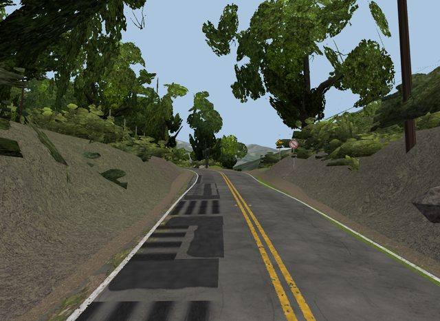
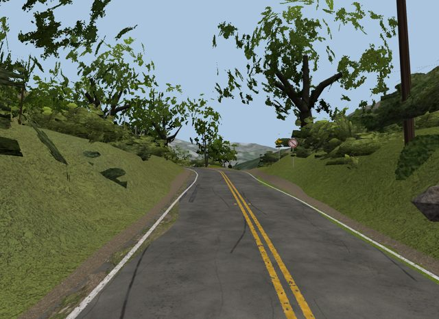
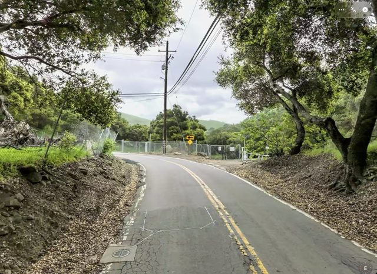
dev5: big black patch blocks + striped crack-seal quads across the left lane. dev6: plain worn grey, thin baked seal; surveyed patches only.
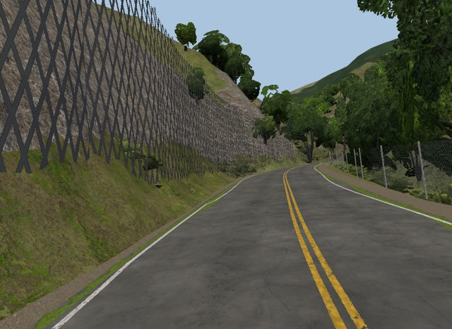
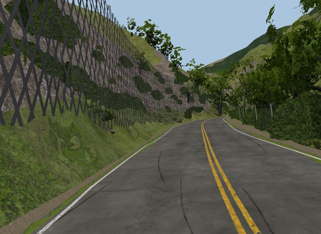
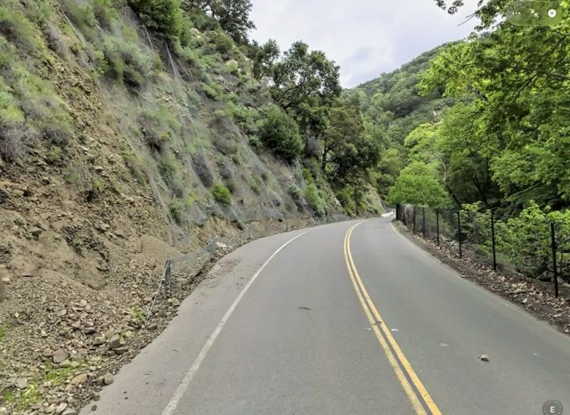
dev5 clean here; dev6 adds faint baked seal lines.
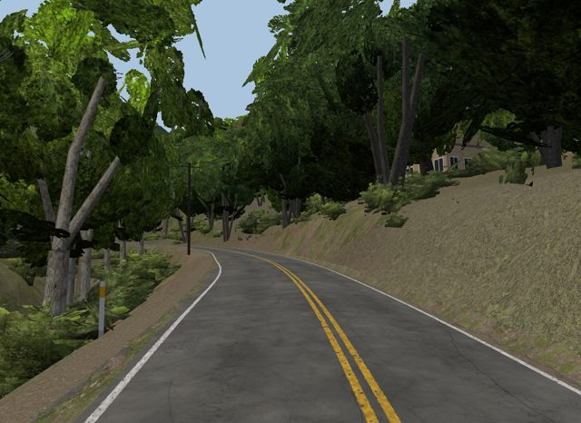
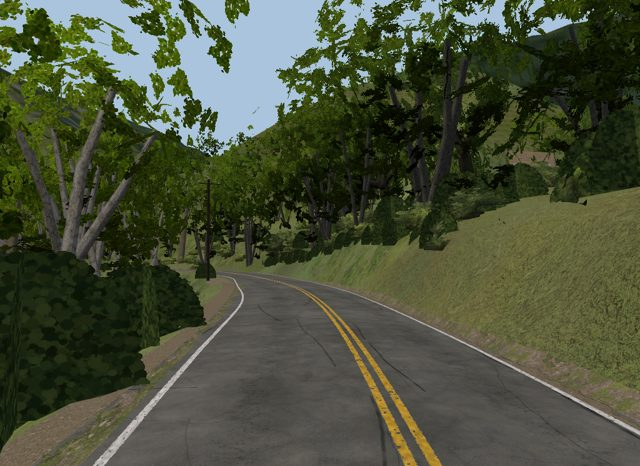
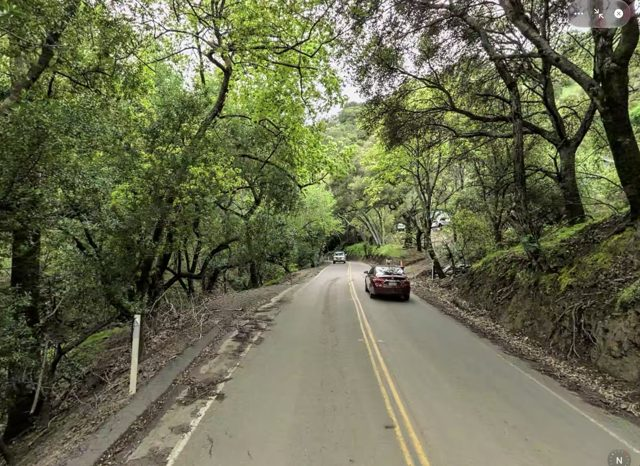
unchanged character; GoPro shows plain worn asphalt.
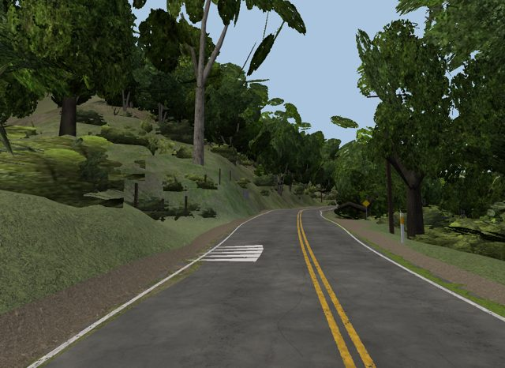
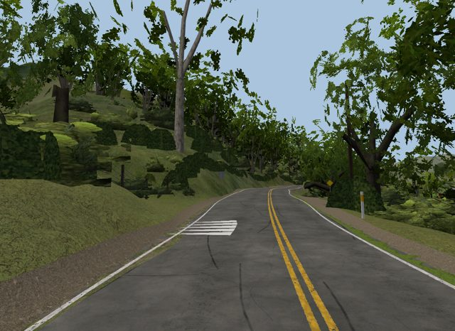
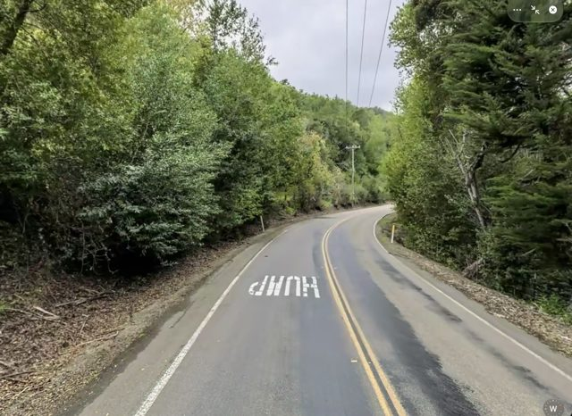
HUMP legend (ledger) kept: GoPro frame 93 shows HUMP ahead in the left lane. No decal junk.
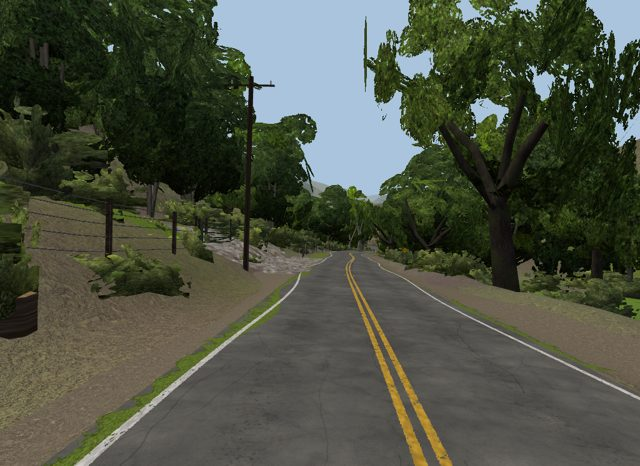
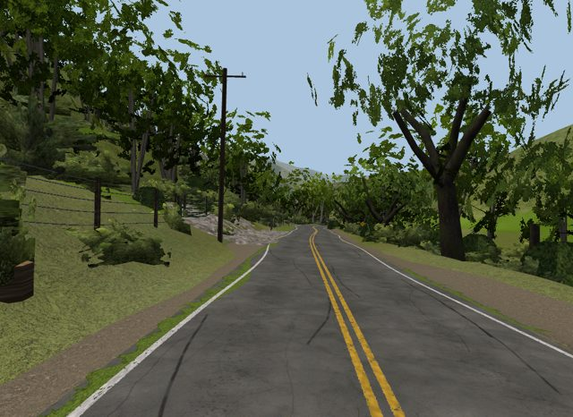
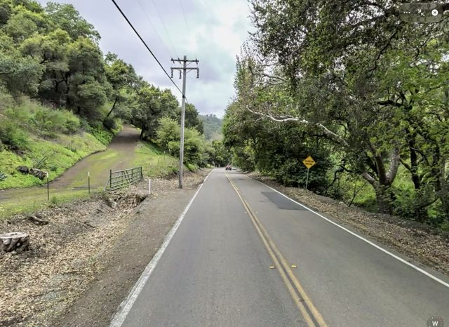
clean both; baked seal faint.
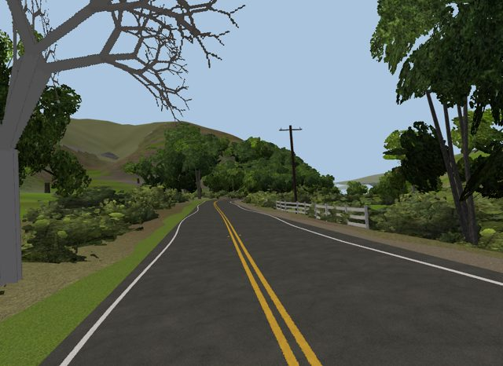
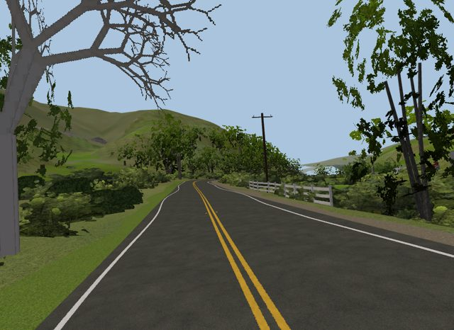
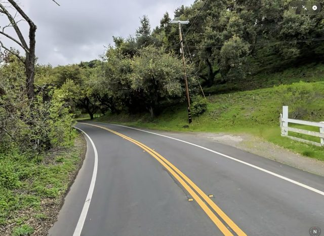
fresh black span (10870-12250): no seal/patches in either build (separate fresh material).
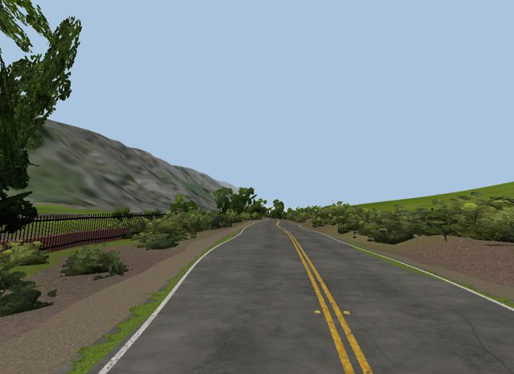
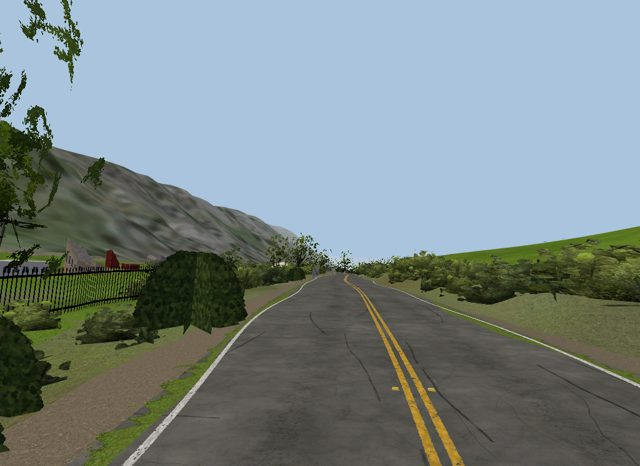
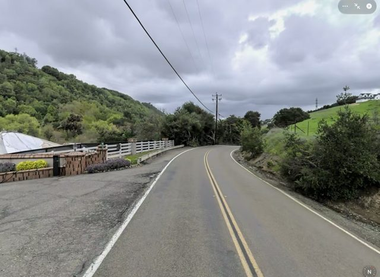
clean; RPMs + double yellow.
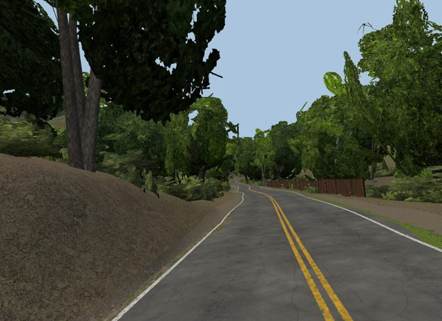
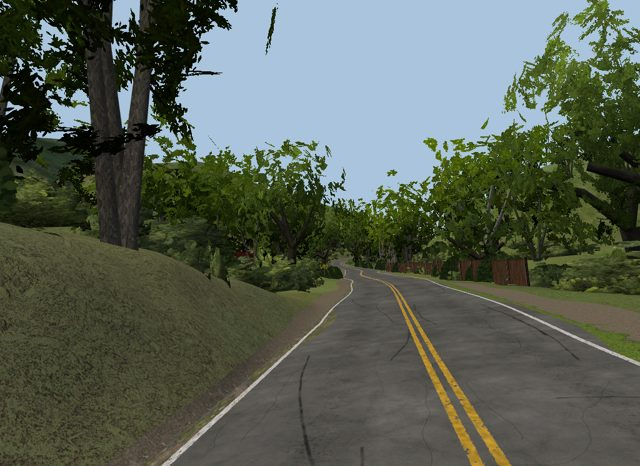
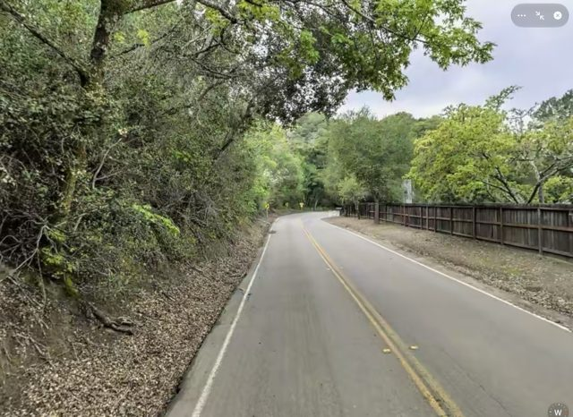
clean both.